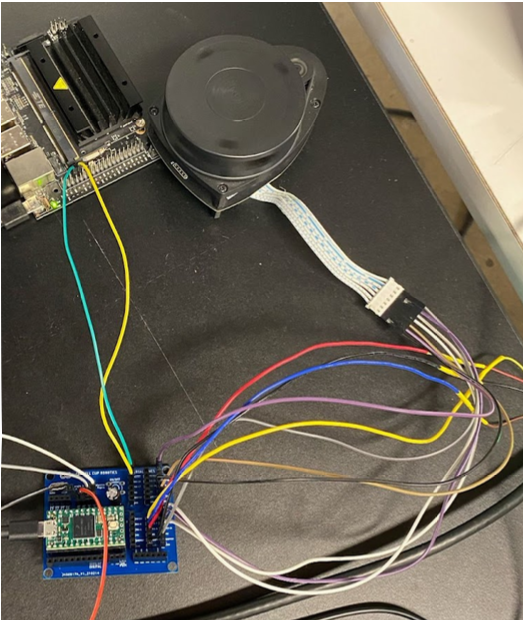

The picture below shows a connectivity example between the LiDAR sensor (top center), the robot's opearting system (top left), and the sensor data collecting microcontroller (Teensy).
In the firmware, I designed the framework to collect the data from each sensor and store it in thier respective arrays. After this collection, the arrays would all be concatonated togther such that the array has each sensor data listed one after the other. Once collected, the data is encoded for UART transmission using R2Protocol (an enocding and transmission strategy developed by an alumnus of the team). This encoded data is then sent to the robot's main operating system, which then uses Python to decode that data and organize the large array into separate, sensor specific arrays. To ensure simple access to software algorithms, I also designed an API with simple callable functions that ensure easy access to the data from specific sensors.
My work on this project has helped me to gain an understanding of the I2C and UART communication protocols, and specifically learn how to debug these protocols. Additionally, this project has allowed me to practice API development and code abstraction in which I have learned how to best relay information in ways that are useful. Along with this, I was able to strengthen my communication skills by working in a team working toward the same goal; this skill was especially refined for working with interdisciplinary teams that do not necessarily have the same technical expertise as the work that I am doing.
To see my end-of-semester documentation for this project with an in-depth code description, please download this pdf!